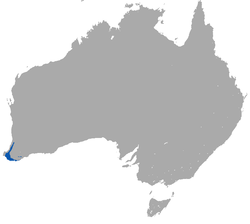
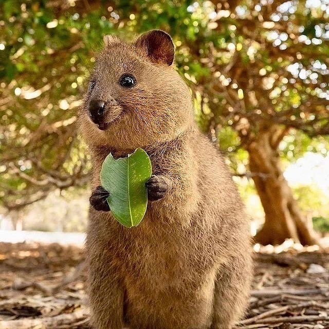
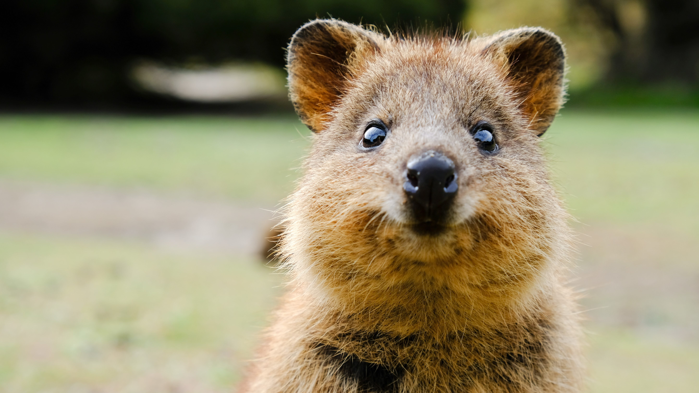

Tal vez no conozcas al quokka, pero es uno de los animales más cute y simpáticos que te puedas encontrar. Habita al oeste de Australia. Se trata de un marsupial herbívoro que mide alrededor de 40 centímetros de longitud. Además, es tan curioso que no duda en acercarse a los humanos.
Su aspecto y su sonrisa resultan tan características que, en el año 2013, The Huffington Post, lo declaró el animal más feliz del mundo. No son pocos los turistas que viajan hasta la zona donde habita solo para verlo. Sin embargo, el quokka es otro de los animales en peligro de extinción. También está incluido en la Lista Roja de Animales en Peligro. El motivo son la deforestación para construir edificios y la introducción de depredadores en su hábitat como el zorro.
En el momento del asentamiento colonial, el quokka estaba muy extendido y era abundante, y su distribución abarcaba un área de aproximadamente 41 200 km2 (15 900 millas cuadradas) del suroeste de Australia Occidental, incluidas las dos islas costeras, Bald y Rottnest. Para 1992, luego de una gran disminución de la población en el siglo XX, la distribución del quokka en el continente se había reducido en más del 50 % a un área de aproximadamente 17 800 km2 (6900 millas cuadradas).
A pesar de ser numeroso en las islas pequeñas de la costa, el quokka se clasifica como vulnerable. En el continente, donde está amenazado por especies depredadoras introducidas como zorros rojos, gatos y perros, requiere una densa cubierta vegetal como refugio. La tala de Clearfell, el desarrollo agrícola y la expansión de viviendas han reducido su hábitat, lo que contribuye a la disminución de la especie, al igual que la tala y quema de los pantanos restantes. Además, los quokkas suelen tener una camada de uno y crían con éxito una cría cada año. Aunque se aparean constantemente, generalmente un día después del nacimiento de las crías, el pequeño tamaño de la camada, junto con el espacio restringido y los depredadores amenazantes, contribuye a la escasez de la especie en el continente.
Se estima que 4000 quokkas viven en el continente, y casi todas las poblaciones del continente son grupos de menos de 50, aunque un grupo decreciente de más de 700 ocurre en el bosque del sur entre Nannup y Dinamarca. En 2015, un extenso incendio forestal cerca de Northcliffe casi erradicó una de las poblaciones locales del continente, y se estima que murió el 90 % de los 500 quokkas.
Como la mayoría de los macrópodos, los quokkas se alimentan de muchos tipos de vegetación, como hierbas, juncos y hojas. Un estudio reveló que la Guichenotia ledifolia, una pequeña especie de arbusto de la familia Malvaceae (malváceas), es uno de los alimentos favoritos de los quokkas. A los visitantes de la isla de Rottnest se les prohíbe dar comida a los quokkas, en parte porque la ingesta de "comida humana", como las patatas fritas, puede causar deshidratación y desnutrición, ambas cosas perjudiciales para su salud. A pesar de la relativa falta de agua dulce en la isla de Rottnest, los quokkas tienen grandes necesidades del líquido, que satisfacen principalmente comiendo vegetación. En el continente, los quokkas sólo viven en zonas con 600 mm (24 pulgadas) o más de lluvia al año. Mastican su bolo alimenticio de forma similar a las vacas.
Cuando los Europeos llegaron a Australia, trajeron nuevas especies de potenciales predadores para pobres Quokkas. Esto apoyó por un cambio del ambiente natural de los Quokkas y desde paisaje abierto trasladaron a las islas y los bosques. En la naturaleza se encuentran en una parte pequeña y limitada del suroeste de Australia Occidental. Un grupo grande de Quokkas vive en la Isla de Rottnest y una población más pequeña en isla cerca de Albany. Acanthocarpus, bosques de eucaliptos y palos de sangre son sitios más favoritos para descanso. También son conocidos por trepar a los árboles.
Los quokkas tienen poco miedo a los humanos y comúnmente se acercan a las personas, particularmente en la isla Rottnest, donde abundan. Aunque los quokkas son accesibles, hay unas pocas docenas de casos anuales de quokkas en las que muerden a personas, especialmente a los niños.
Hay restricciones con respecto a la alimentación. Es ilegal que los miembros del público manipulen a los animales de cualquier manera, y se desaconseja especialmente la alimentación, particularmente con "comida humana", ya que pueden enfermarse fácilmente. La Autoridad de Rottnest Island puede emitir un aviso de infracción con una multa de 300 dólares por tal infracción.
La pena máxima por crueldad animal es una multa de $50 000 y una sentencia de prisión de cinco años. Además de las restricciones sobre las interacciones humanas con Quokkas, se ha probado que son potencialmente dañinos para los humanos con sus altas tasas de infección por salmonella, especialmente en el calor del verano. Esto ha sido probado y experimentado por científicos que han realizado análisis de sangre en Quokkas salvajes en la isla Rottnest.
| Característica | Descripción |
|---|---|
| Nombre científico | Setonix brachyurus |
| Alimentación | Herbívoros, se alimentan principalmente de pastos, hojas, corteza y plantas. También consumen frutas y semillas. |
| Esperanza de vida | Entre 10 y 12 años en la naturaleza. |
| Presas | No tienen presas, ya que son herbívoros. Son presas de aves rapaces y zorros. |
| Amenazas | Introducción de depredadores como zorros, gatos y ratas. La pérdida de hábitat debido a la expansión humana también es una amenaza. |
| Distribución geográfica | Viven principalmente en la isla de Rottnest, cerca de la costa de Australia Occidental, aunque también habitan en algunas zonas costeras cercanas. |
| Peso | Entre 2.5 y 5 kg, dependiendo de su edad y salud. |
| Estatura | Entre 40 y 54 cm de largo (sin incluir la cola) y la cola mide entre 25 y 30 cm. |
| Comportamiento | Son animales nocturnos y sociales, con una personalidad amigable y curiosa, lo que les ha ganado popularidad en redes sociales. |
| Estado de conservación | En la Lista Roja de la UICN, el quokka está catalogado como vulnerable debido a las amenazas que enfrenta en su hábitat natural. |